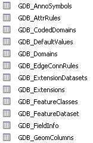
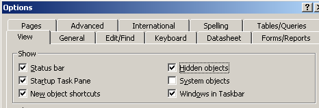

2008-04-03 10:27
geographika
arcobjects
hiding-geodatabase-tables
published
The following VBA function hides all on the geodatabase tables added by ESRI into an Access database. Useful if you spatially enable your users database, and they wonder what all those GDB_ tables are for..

add a parameter to the sub. | | ``Public Sub HideGeoDatabaseTables() ``
Dim strTableName As String For i = 0 To CurrentDb.TableDefs.Count - 1 If CurrentDb.TableDefs(i).Name Like "GDB_*" Then strTableName = CurrentDb.TableDefs(i).Name Access.SetHiddenAttribute acTable, strTableName, True End If NextAccess.SetHiddenAttribute acTable, "SelectedObjects", True Access.SetHiddenAttribute acTable, "Selections", True
End Sub
To view hidden objects in Microsoft Access, go to Options and check the “Hidden Objects” box.

Comments
1. amercader **
Howay the lads!! :)
ReplyAdd Comment